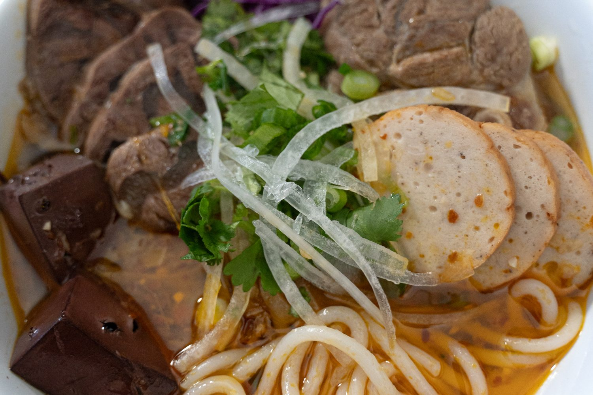

Bún Bò Huế

Ingredients
Broth:
- 8 quarts of water
- 2 lbs beef knuckle
- 2 lbs beef rib bone
- 2 lbs pork hock
- 2 lbs beef shank
- 1 yellow onion
- 3 stalks lemongrass
- 1/2 pineapple
- 2 inch knob ginger
- 2 tbsp msg
- 4 tbsp fish sauce
- 1 inch nub rock sugar
Sate Sauce
- 1/4 cup annatto seed oil
- 2 stalks lemongrass
- 1 shallot
- 4 cloves garlic
- 4 tbsp red chili flakes
- 2 tbsp sugar
- 2 tbsp fish sauce
- 1 tbsp shrimp past
Toppings
- Cha Que (Cinnamon ham)
- Coagulated pork blood
- Red cabbage
Garnishes
- White onion
- Green onion
- Cilantro
- Lime
Steps
- Parboil beef bones, pork hocks and beef shank. Then rinse and clean pork under cold water
- To a clean stockpot add eight quarts of water and bring up to a boil, add cleaned beef, onion, ginger, lemongrass and pineapple. Bring back up to a boil, skim off any impurities and let that simmer covered for one hour
- After an hour remove onion and ginger so that they don’t disintegrate into the broth and to help keep the broth clean. Let that simmer for another hour and then pull the pork hock. At the two and half to three hour mark pull the beef shank, wrap in plastic wrap and then put into the fridge to cool down to slice later
- While broth is simmering, make the sate sauce by combing annatto seed oil, minced lemongrass, shallots, garlic in a sauce pan. Season with red chili flakes, sugar, fish sauce and shrimp paste
- Season broth with rock sugar, msg and fish sauce. Add half the sate, and reserve the other half to use an additional topping
- If you’re using coagulated pork blood, cut into one inch cubes, and add to boiling water and cook for 15-20 minutes until tender
- Cut Cha Quế (Vietnamese cinnamon ham) into slices and prep the rest of the toppings and garnishes. Shred red cabbage or banana blossom. Thinly slice white onion, and submerge in cold water to remove raw onion flavor. Cut green onions, cilantro and lime
- Cook thick rice noodles in salted water. Beware that depending on which brand of rice noodles you use, the cooking instructions are very off. Package will say cook for 7-8 minutes, but I’ve found that you actually need to cook for 30-35 minutes to get them to al dente
- Assemble bowl by adding noodles, toppings, broth and garnishes